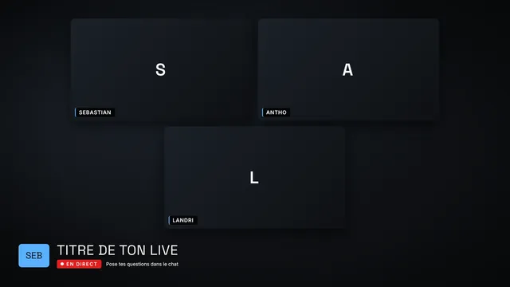

Mes lives
Ton studio est prêt
Donne un titre, choisis un thème : ta régie, le lien de tes invités et le lien pour OBS sont créés d'un coup.



Lives terminés
Comment ça marche
01Ouvre la régie
Choisis ta caméra et ton micro, puis « Démarrer ma caméra ». Mets un casque.
02Invite
Bouton « Inviter » : envoie le lien. Tes invités arrivent en coulisses, tu les mets à l'antenne d'un clic.
03Branche OBS
Dans OBS, une source Navigateur avec le lien OBS (1920 × 1080). C'est la seule source à ajouter.
- Ferme ta Cam Link dans OBS : c'est la régie qui l'utilise.
- Dans la source Navigateur, coche « Contrôler l'audio via OBS ».
- Pendant le live : touches 1 Intro, 2 Plateau, 3 Écran partagé, 4 Fin.
- Vertical (TikTok, Shorts) : même chose avec le lien vertical, en 1080 × 1920. La régie pilote les deux en même temps.